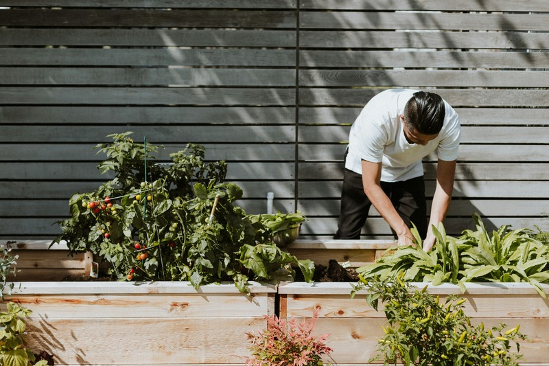

Container Herb Gardens
Choose soil, drainage, light, and container size for small spaces.
View guideMedia and typography lab
Replace the placeholder media paths with your own image variants, then document the format, size, source, and accessibility purpose.

Workshop cards
Choose soil, drainage, light, and container size for small spaces.
View guidePlan garden routes with surface, slope, seating, and turning space in mind.
View guideCompare fabric, trellis, and plant-based shade strategies for heat protection.
View guideIf this page used a video or map embed, this section would need a title, fallback link, captions or transcript plan, loading decision, and privacy note.